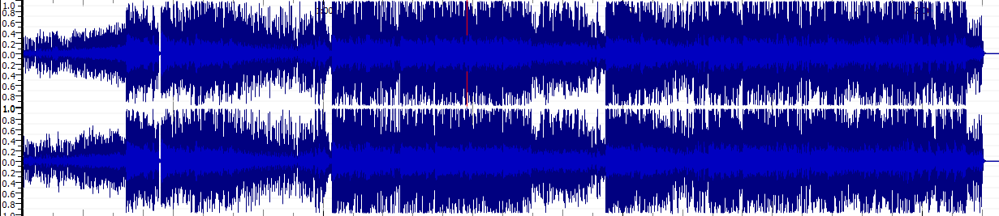
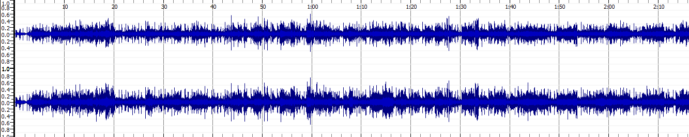
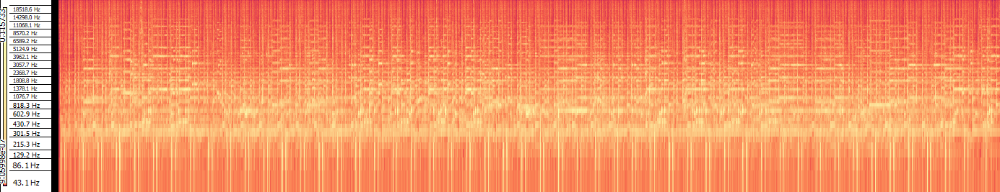
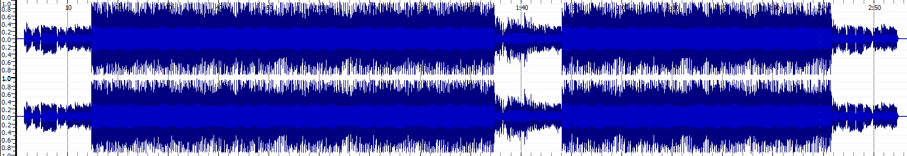

MUSIC ANALYTICS
Music as Sound
Task 1: Identify and list the most important technical and non-technical metadata associated
with each music track.
Non-Technical Metadata
| Song Title |
Artist |
Album |
Genre |
Year |
Source |
Copyright |
| Dolce |
Mise Darling |
Rebel |
Pop, Electronic |
2019 |
freemusicarchive.org |
Creative Commons |
| Double Decker |
Lobo Loco |
Vagabond |
Blues, Space-Rock |
2018 |
freemusicarchive.org |
Creative Commons |
| Feel Like Drugs |
Vincent Augustus |
Bad People Make Good Music |
Pop, Soul, Hip-Hop, R&B |
2019 |
freemusicarchive.org |
Creative Commons |
Technical Metadata
| Song Title |
File Format |
Duration |
Bit Rate |
Sample Rate |
Channels |
| Dolce |
mp3 |
00:03:15 |
320kbps |
44100Hz |
2 |
| Double Decker |
mp3 |
00:02:16 |
224kbps |
44100Hz |
2 |
| Feel Like Drugs |
mp3 |
00:02:56 |
320kbps |
44100Hz |
2 |
Task 2.1: Generating Waveforms and Spectograms from Sonic Visualiser for each track





Task 2.2: What Are The Advantages of a Time-Frequency Analysis over a Wave-Form Analysis?
A time-frequency analysis is a more realistic approach at analysing
a piece of music as the user can identify what feature is happening at a specific point in the music.
A waveform-based analysis only provides a vague representation of the music,
however a spectogram allows editors to pinpoint specific events in the piece.
The piece I am analysing (feel like drugs) shows more sparse sections in the piece
which I can identify with a certain time in the song,
therefore I already know at 1:36:00 the music is going to be softer and less instruments are going to be present.